Power meters and cutouts
This page documents a few examples of vintage analogue power meters, as used back in the day, as well as supplier cutouts - that is, fuses or breakers intended to protect the supply wires going into a building.
A note on European power meters: unlike in North America, meters used here generally don't fit into special sockets. Instead, they are mounted directly onto the wall (or, nowadays, on special plastic boxes) using screws, and the line and load wires are then hooked up directly to the meter itself.
1980s ENEL power meter
This is a common style of analogue power meter, as used in Italy before the advent of smart meters. These old meters mostly all work the same: there are terminals on the bottom for the line and load terminals, which are hidden under a cover held in place by a sealed screw, to prevent tampering.
The front of the device shows the various specifications of the meter: it's powered at 220V, of course, and is rated for a maximum of 40A (while this may seem low, remember that most Italian houses only have a 3kW supply). There is also a logo which indicated the presence of an anti-tamper mechanism: if the meter is hooked up to spin in reverse, this will automatically stop the platter from spinning (although this doesn't work if the meter is tilted).
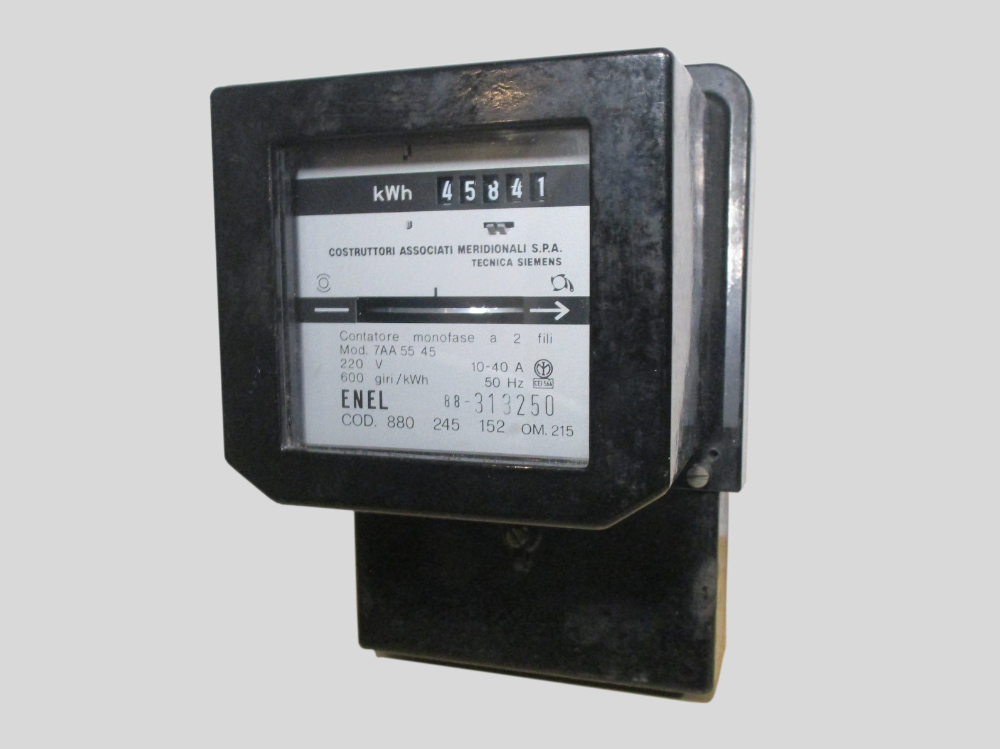 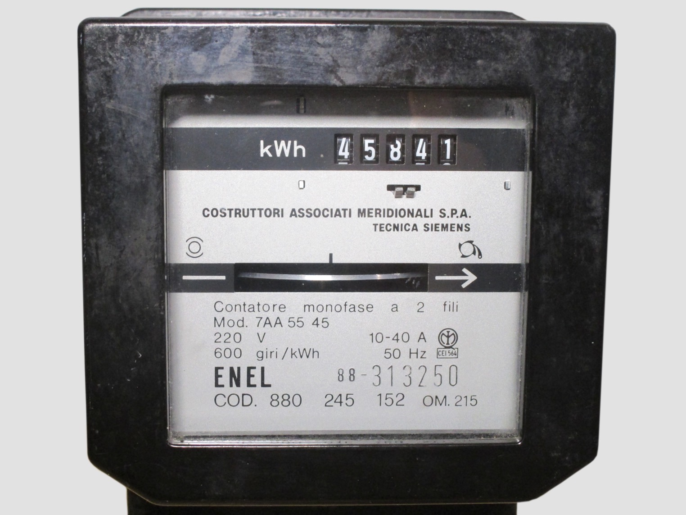 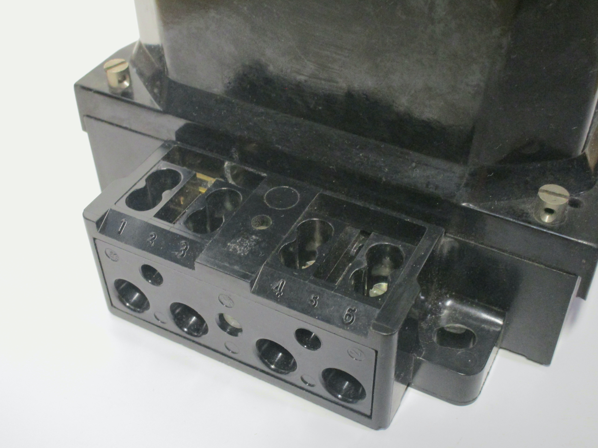{kind=link}
{kind=link}
{kind=link}
Italian 125V power meter
This old power meter, built by Officine Galileo in Italy, is quite interesting as it was designed for 125V supplies. As explained previously, these were common back in the day for lighting, as lighting circuits were on a different tariff, and the lower voltage was used to prevent people from using it for appliances.
This also explains the quite low amp rating of the meter - definitely not enough for an entire house, but more than enough for lamps and small appliances like radios or desk fans. It should be noted that back in the day there were many different voltages in use for lighting supplies, but starting from the 50s-60s these were standardised. 125V was, specifically, one of the "official" voltages permitted for lighting supplies.
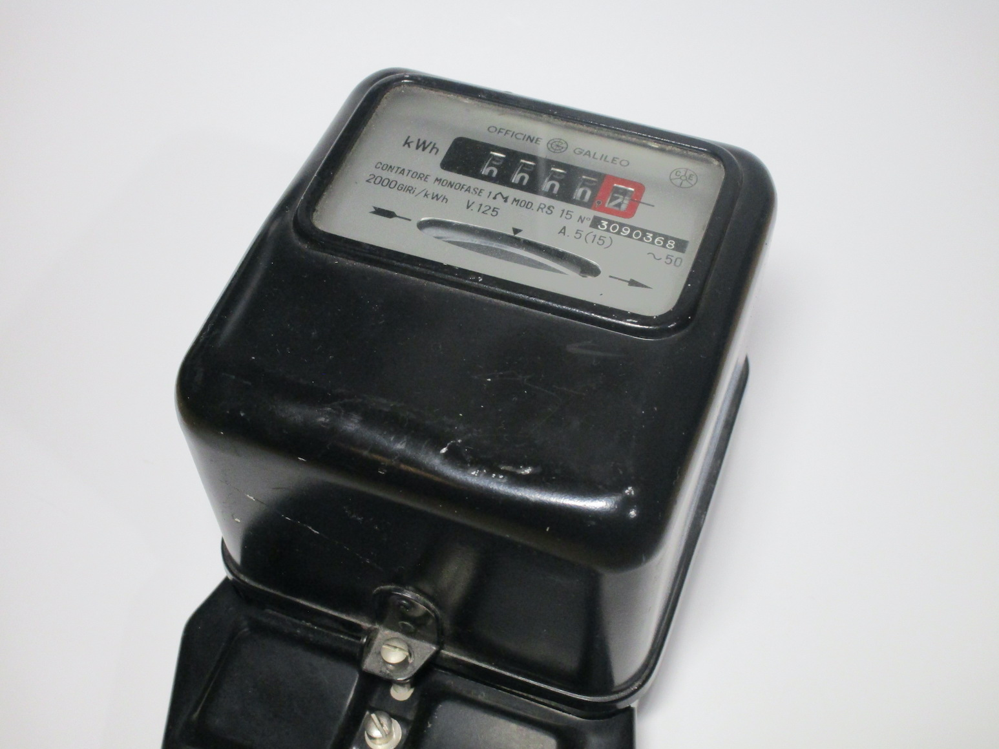 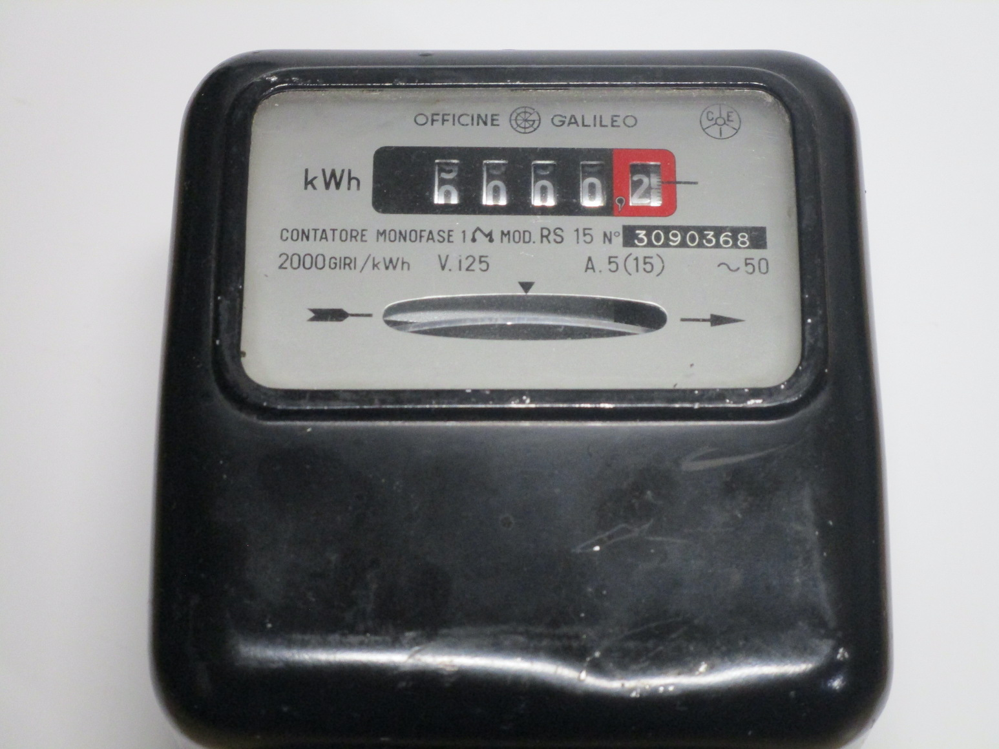 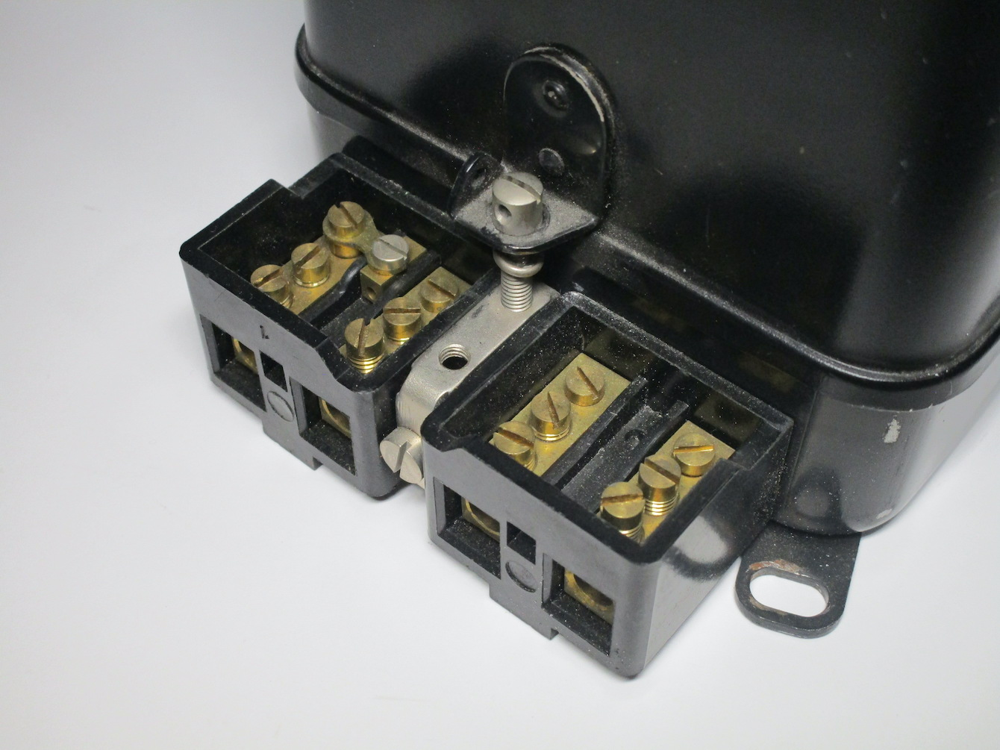{kind=link}
{kind=link}
{kind=link}
ENEL limiter breaker
This is a power limiter breaker; while it does look similar to other breakers used in Italy back in the day, this one was specifically intended to be used to limit the power in use in an installation. This is because, in Italy, you pay different rates depending on the maximum power specified in your contract - going above the limit for more than a brief period of time will shut off your power.
While nowadays this is all done inside the meter (which, unlike most other countries, has a built-in breaker specifically for this purpose), back in the day this was accomplished using a physically separate breaker.
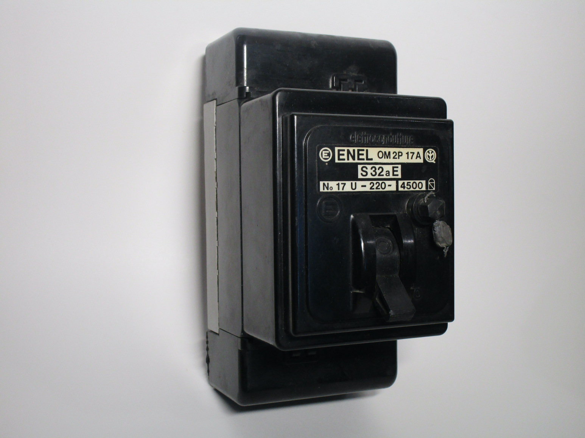{kind=link}
 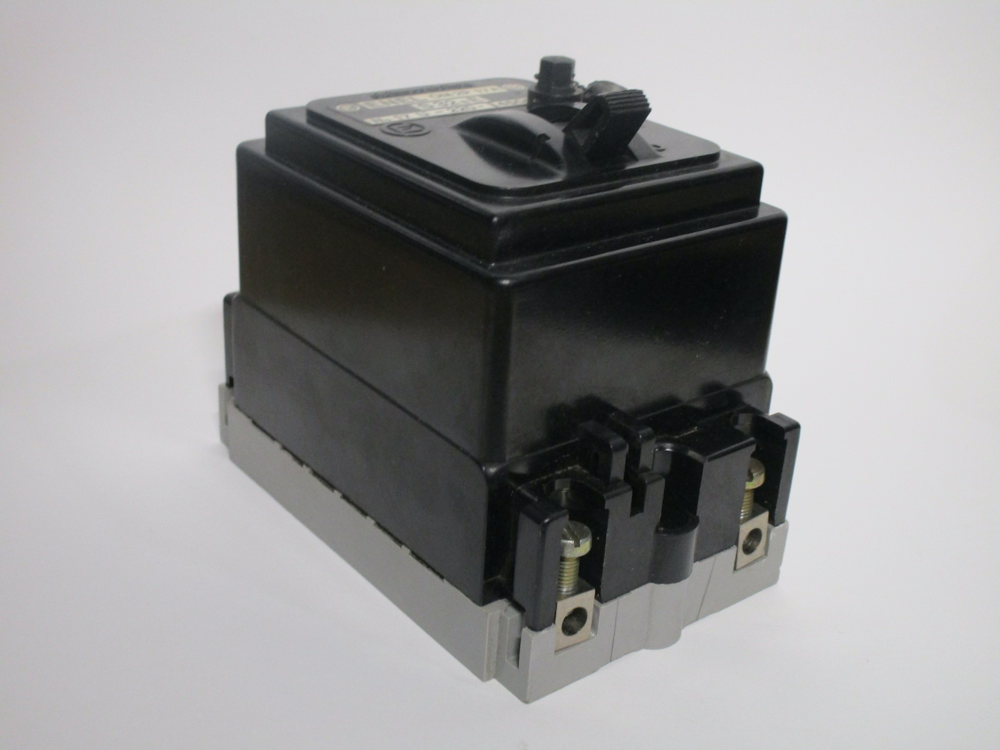
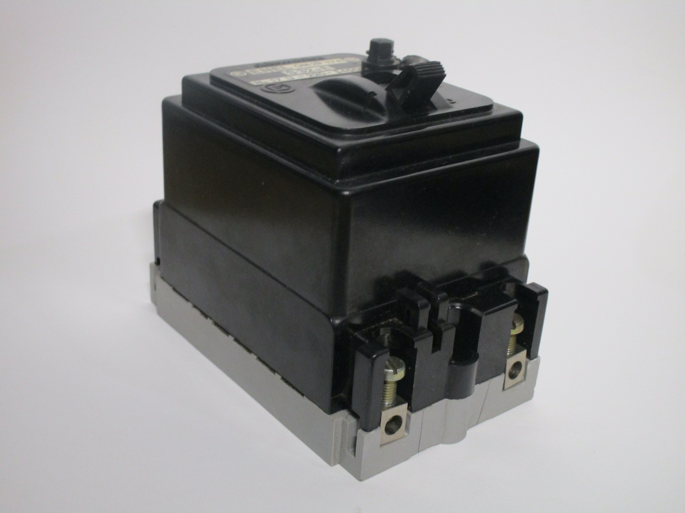
{kind=link}
Schneider limiter breaker
This is another limiter breaker, in this case made by the French company Schneider Electric. It's single-phase, and would have been used to protect the supply wires (as well as, possibly, set a power limit). It was also made quite recently, with a 2012 date code on the front. A cover is present on the front which, once removed (only possible by breaking the seals), allows the breaker to be set at different currents, from 10 to 32A.
Limiter breakers like this one are quite common in France (unlike Italy they aren't integrated into power meters). However, the ones genrrally used there also have a built-in low-sensitivity RCD; this is because of the TT earthing system in use there, where an RCD is absolutely required. This breaker, however, was found in a different country that doesn't use this system, and as such doesn't have an RCD of any sort (something made very clear at the front of the device).
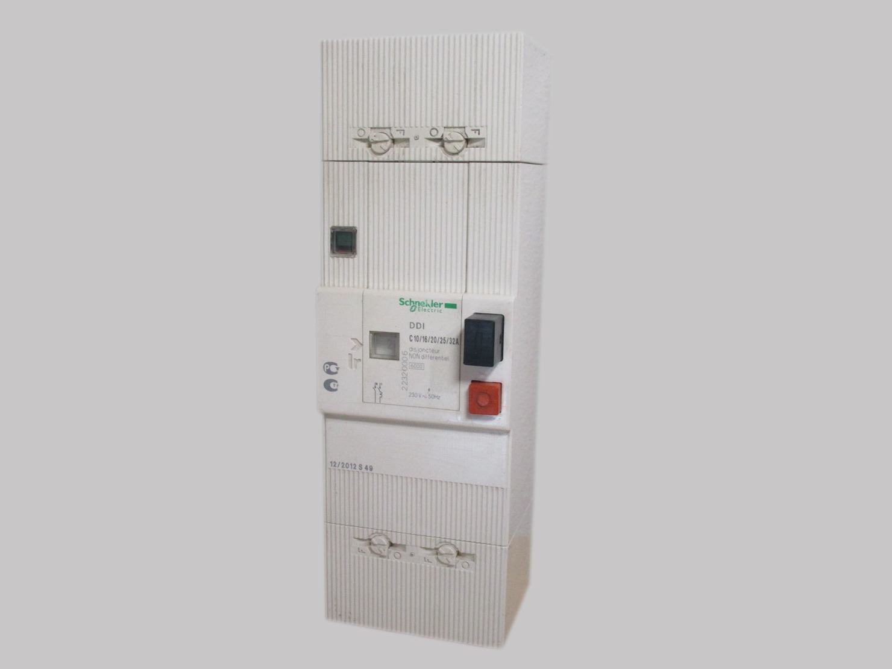 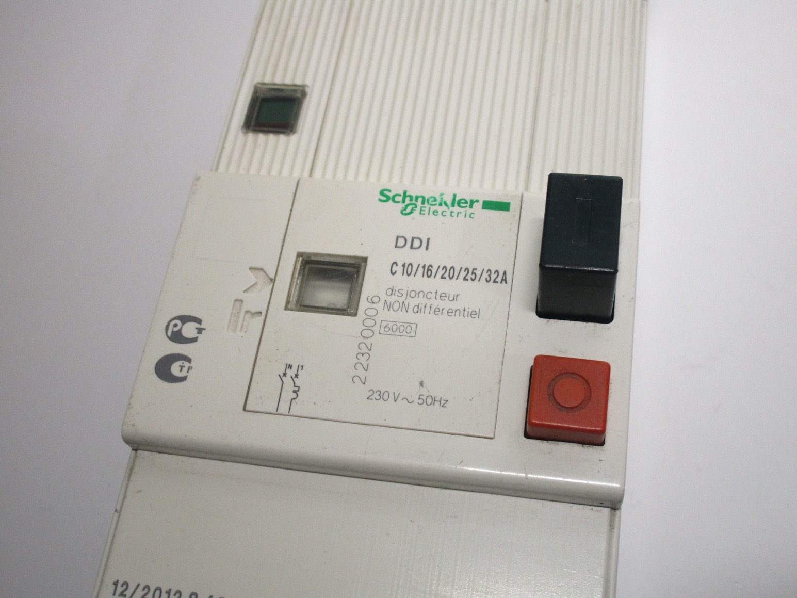 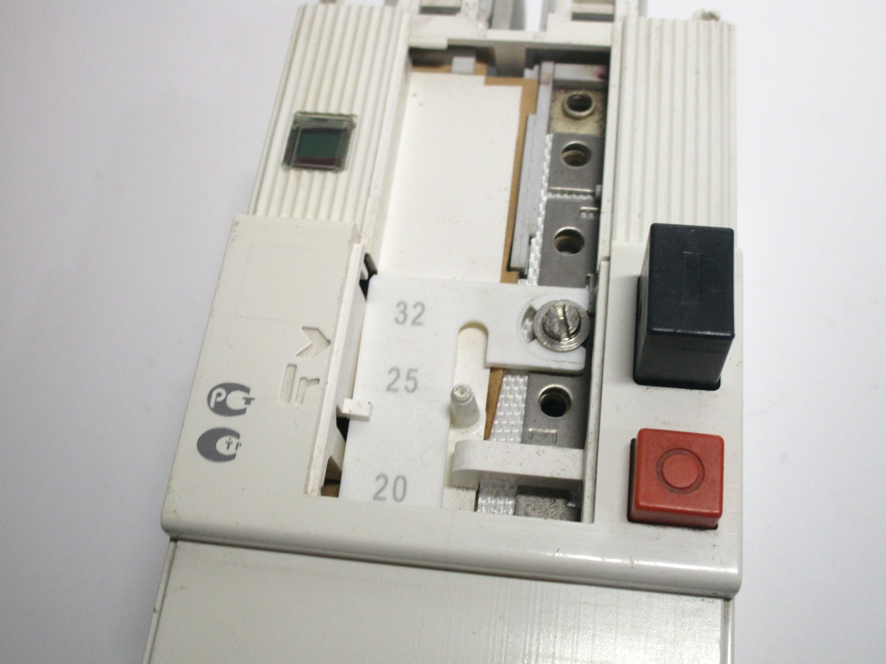{kind=link}
{kind=link}
{kind=link}